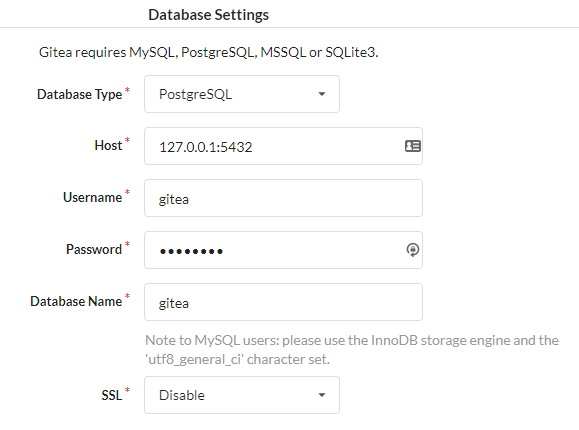
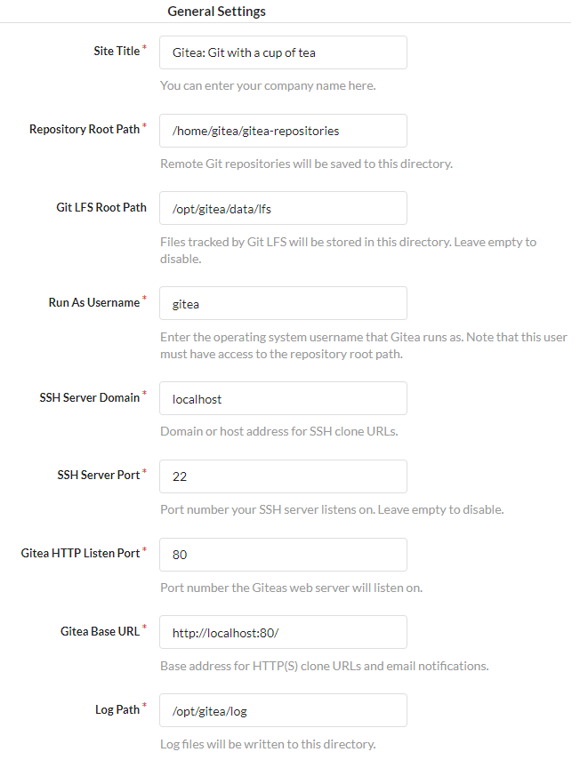
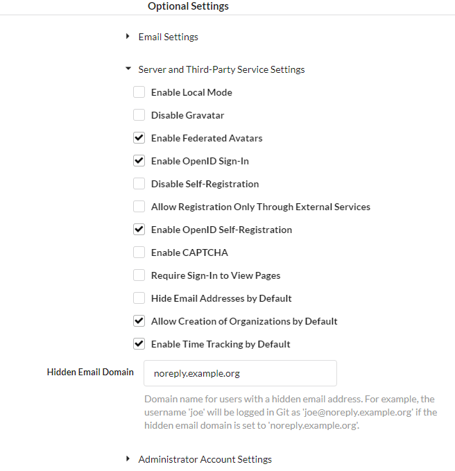
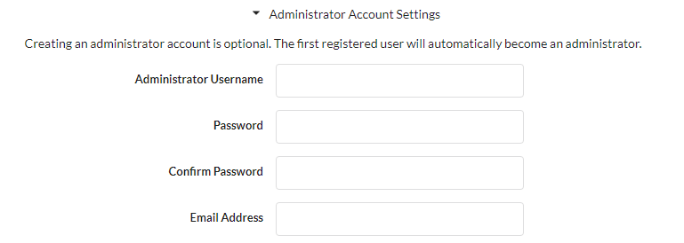

Gitea - CentOS¶
Tested and installed on CentOS 7.6-1810.
Prerequisites¶
Repositories¶
Two third-party repositories are used since CentOS base and epel contain very outdated versions of PostgreSQL and Redis.
The first is the Inline with Upsteam Stable (IUS) Community Project repository. This install will be using this repository for an updated version of Git and Redis.
The second is the official repository for PostgreSQL 11.
sudo yum install -y \ https://centos7.iuscommunity.org/ius-release.rpm \ https://download.postgresql.org/pub/repos/yum/11/redhat/rhel-7-x86_64/pgdg-centos11-11-2.noarch.rpm
Packages¶
The following packages are required. git2u and redis40u are from the IUS repository and named as such to prevent collisions with CentOS standard repositories.
sudo yum install -y \ git2u \ redis40u \ postgresql11
If this installation's database will be local, include the PostgreSQL server:
sudo yum install -y postgresql11-server
If any data directories (repositories, database, Gitea custom, LFS, etc.) will be mounted over NFS, install the NFS utilities:
sudo yum install -y nfs-utils
PostgreSQL¶
Database over NFS¶
Create the directory that the NFS export will mount to:
sudo mkdir -p /opt/psql/data
Mount the NFS export:
sudo mount -t nfs <NAS IP>:/gitea/database /opt/psql/data
Open /etc/fstab for editing and add the following line:
<NAS IP>:/gitea/database /opt/psql/data nfs defaults,_netdev 0 0
Note
The _netdev flag denotes that mounting should be performed after networking has been initialized.
Installing PostgreSQL should have created a postgres user and postgres group. Set ownership of the new directories to that user and group.
sudo chmod -R 700 /opt/psql
sudo chown -R postgres:postgres /opt/psql
Edit the PostgreSQL systemd service to set the new database directory:
sudo systemctl edit postgresql-11
This will create and override file. Insert the following:
[Service] Environment=PGDATA=/opt/psql/data [Unit] RequiresMountsFor=/opt/psql/data
Setup Database¶
Initialize the database:
sudo /usr/pgsql-11/bin/postgresql-11-setup initdb
Open pg_hba.conf for editing.
Local Storage
/var/lib/pgsql/11/data/pg_hba.conf
NFS Storage
/opt/psql/data/pg_hba.conf
Edit the following lines to change the authentication method from ident to md5:
# TYPE DATABASE USER ADDRESS METHOD # IPv4 connections: -- host all all 127.0.0.1/32 ident ++ host all all 127.0.0.1/32 md5 # IPv6 connections: -- host all all ::1/128 ident ++ host all all ::1/128 md5
Enable service autostart and start PostgreSQL:
sudo systemctl enable --now postgresql-11
Open the PostgreSQL terminal as the postgre user:
sudo -u postgres psql
Create the gitea database user:
CREATE USER gitea WITH PASSWORD '1qazxsw2';
Warning
It should go without saying, but do not use the provided example password.
Create the gitea database and set the owner to the newly created user:
CREATE DATABASE gitea OWNER gitea;
Grant all privileges on the new database to the new user:
GRANT ALL PRIVILEGES ON DATABASE gitea TO gitea;
Exit the PostgreSQL terminal:
exit;
Redis¶
Open /etc/redis.conf for editing and change the following values:
-- daemonize no ++ daemonize yes -- supervised no ++ supervised systemd -- appendonly no ++ appendonly yes
Open /etc/sysctl.conf for editing and add the following line:
vm.overcommit_memory = 1
Note
This is a system tune-able for Redis to prevent forking errors resulting from duplicate data consuming all of the allocated memory.
Generate a new initramfs with the new tune-able:
sudo dracut -v -f
Enable redis autostart and start the service:
sudo systemctl enable --now redis
Gitea¶
NFS¶
Three different exports should be used to store Gitea data. The following structure is used to mimic the default directory structure and minimize the number of customizations in the setup.
custom- Configuration file and customizationsdata- Thelfsdirectory, which stores Git Large File Storage objectsgitea-repositories- All repositories
Create the directories:
sudo mkdir -p /opt/gitea/{custom,data,gitea-repositories}
Create the directory for LFS:
sudo mkdir /opt/gitea/data/lfs
Mount the NFS exports:
sudo mount -t nfs <NAS IP>:/gitea/custom /opt/gitea/custom
sudo mount -t nfs <NAS IP>:/gitea/gitea-repositories /opt/gitea/gitea-repositories
sudo mount -t nfs <NAS IP>:/gitea/data_lfs /opt/gitea/data/lfs
Open /etc/fstab for editing and add the following line:
<NAS IP>:/gitea/custom /opt/gitea/custom nfs defaults,_netdev 0 0 <NAS IP>:/gitea/gitea-repositories /opt/gitea/gitea-repositories nfs defaults,_netdev 0 0 <NAS IP>:/gitea/data_lfs /opt/gitea/data/lfs nfs defaults,_netdev 0 0
Application¶
If NFS is not used and the application directory does not exist, create it:
sudo mkdir -p /opt/gitea
Create a user and group for Gitea
Note
A home directory should be used to store SSH keys for the application.
sudo adduser -rm -s /bin/bash gitea
Set the owner and permissions for the application directory.
sudo chmod -R 700 /opt/gitea
sudo chown -R gitea:gitea /opt/gitea
Get the link for the most recent version of Gitea here.
Note
Choose the most recent tagged version instead of Master.
Choose gitea-<version>-linux-amd64. Version 1.6.1 was used and tested here.
Download the application as the gitea user to the file gitea:
sudo -u gitea curl https://dl.gitea.io/gitea/1.6.1/gitea-1.6.1-linux-amd64 -o /opt/gitea/gitea
Make the dowloaded application executable:
sudo chmod +x /opt/gitea/gitea
Open the port desired to run the application on. The tested install used standard HTTP ports and requires permissions to listen on ports less than 1000.
sudo firewall-cmd --permanent --zone=public --add-port=80/tcp
Note
Keep port 80 open if HTTP -> HTTPS redirection will be used.
If HTTPS will be used, remember to open 443 as well.
sudo firewall-cmd --permanent --zone=public --add-port=443/tcp
Reload the firewall:
sudo firewall-cmd --reload
Allow the Gitea application to listen on ports less than 1000:
sudo setcap 'cap_net_bind_service=+ep' /opt/gitea/gitea
Create and open a systemd service file:
sudo touch /etc/systemd/system/gitea.service
[Unit] Description=Gitea (Git with a cup of tea) After=syslog.target After=network.target After=postgresql.service After=redis.service [Service] RestartSec=2s Type=simple User=gitea Group=gitea WorkingDirectory=/opt/gitea/ ExecStart=/opt/gitea/gitea web --port 80 Restart=always CapabilityBoundingSet=CAP_NET_BIND_SERVICE AmbientCapabilities=CAP_NET_BIND_SERVICE [Install] WantedBy=multi-user.target
Note
Ensure the desired port is reflected on the ExecStart line.
Enable autostart on the Gitea service and start it:
sudo systemctl enable --now gitea
Navigate to http://<server IP>/install to complete setup.
Setup¶
Input the database connection information:

Set the general settings of the application. If NFS is used and the above instructions were followed, the default directory locations are used and do not need to be changed.

Note
If standard HTTP and HTTPS are used, the port can be removed from Gitea Base URL to show nice URLs.
Note
If HTTPS is used, set the listen port to 443. Redirection can be setup later.

Note
Enable Local Mode serves JS and CSS from the server itself instead of using CDNs.

Note
If the Administrator Account Settings are not filled out here, the first account created will become the administrator. Its a good idea to go ahead and create this account now.
Once everything is filled out, click install and wait for the process to complete.
Redis Setup¶
Open /opt/gitea/custom/conf/app.ini for editing. Delete any existing [session] settings.
-- [session] -- PROVIDER = data/session
Enter the following information to use Redis as cache and session storage:
[cache] ADAPTER = redis INTERVAL = 60 HOST = network=tcp,addr=:6379,db=0,pool_size=100,idle_timeout=180 ITEM_TTL = 16h [session] PROVIDER = redis PROVIDER_CONFIG = network=tcp,addr=:6379,db=0,pool_size=100,idle_timeout=180 COOKIE_NAME = gitea COOKIE_SECURE = false ENABLE_SET_COOKIE = true GC_INTERVAL_TIME = 86400 SESSION_LIFE_TIME = 86400
Restart Gitea:
sudo systemctl restart gitea.service
HTTPS Redirect¶
Open /opt/gitea/custom/conf/app.ini for editing.
Under the [server] section, enter the following:
REDIRECT_OTHER_PORT = true PORT_TO_REDIRECT = 80
PORT_TO_REDIRECT is the port to listen for HTTP requests then redirects to the port identified in HTTP_PORT, which should be 443 if using HTTPS.
Conclusion¶
Gitea is now setup and ready for use.
Refer to the Configuration Cheatsheet for additional setup.